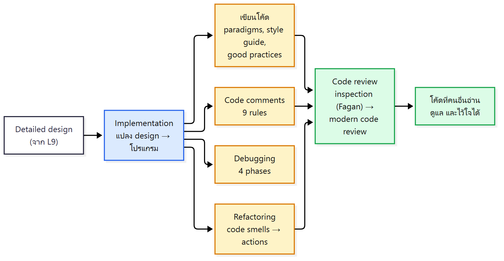
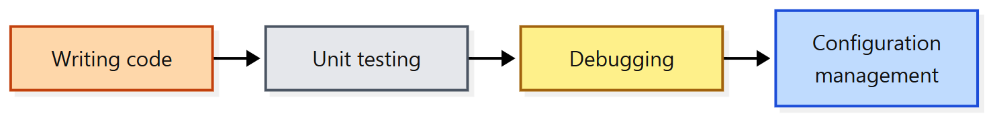
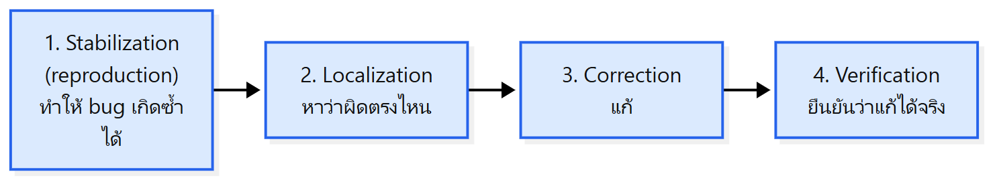
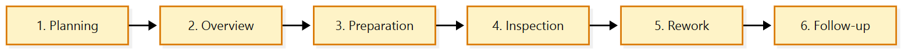
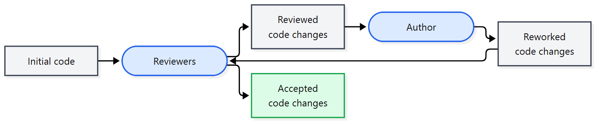

ภาพรวมบทนี้: L9 จบที่ detailed design บทนี้คือขั้นถัดไป implementation แปลง design เป็นโปรแกรมจริง และทำให้โค้ด คนอ่านเข้าใจ ดูแลต่อได้ และไว้ใจได้
เนื้อหาตาม Topics: Programming paradigms (รวม no-code / low-code / vibe coding), Implementation (คุณสมบัติโค้ดที่ดี, style guide, good practices), Code comments (9 rules), debugging, refactoring และ Code review (code inspection ของ Fagan → modern code review + checklist)
เนื้อหา style, code review, documentation ส่วนใหญ่มาจากหนังสือ Software Engineering at Google (อ่านฟรีที่ abseil.io/resources/swe-book) บางสไลด์ดัดแปลงจาก COMPGS04, UCL (Dr. Jens Krinke)

1. Programming paradigms มีกี่แบบ? (สไลด์ 4)
แก่น: มี 4 แบบ: imperative บอก "ทำยังไง" ทีละขั้น, declarative บอก "อยากได้อะไร", object-oriented มองเป็น object ที่มีข้อมูล + พฤติกรรม และ logic บอก "ปัญหาคืออะไร"
| Paradigm | หลักคิด | ตัวอย่างภาษา |
|---|---|---|
| Imperative | บอกคอมพิวเตอร์ ว่าต้องทำยังไง ทีละขั้น (how) | C, Python, Java, JavaScript |
| Declarative | บอก ว่าอยากให้โปรแกรมได้ผลอะไร ไม่บอกวิธี (what, not how) | SQL |
| Object-oriented | มองซอฟต์แวร์เป็น กลุ่มของ object ที่มี data (attributes) และ behavior (methods) | Java, Python, C++, C#, Ruby |
| Logic | กำหนด ว่าปัญหาคืออะไร ไม่บอกวิธีแก้ | Prolog |
- บางภาษารองรับหลาย paradigm เรียกว่า multi-paradigm languages (สังเกตว่า Python, Java อยู่ทั้งในแถว imperative และ OOP)
💡 เปรียบเหมือนสั่งอาหาร: imperative = บอกสูตรทีละขั้น ("ตั้งกระทะ ใส่น้ำมัน...") ส่วน declarative = บอกแค่ "ขอข้าวผัดหนึ่งจาน"
2. No-code, Low-code, Vibe coding ต่างกันยังไง? (สไลด์ 5–7)
แก่น: เป็น 3 แนวทางพัฒนาแบบใหม่ (emerging) ที่ลดการเขียนโค้ดเอง: no-code ไม่เขียนเลย, low-code เขียนบ้างเมื่อจำเป็น, vibe coding บอกสิ่งที่ต้องการเป็นภาษาธรรมชาติให้ AI ช่วย ทุกแบบต้องพึ่ง platform/tool
| No-code | Low-code | Vibe coding | |
|---|---|---|---|
| คืออะไร | สร้างแอป โดยไม่เขียนโค้ดแบบเดิมเลย | สร้างแอปโดย เขียนโค้ดน้อยที่สุด | สร้างโปรแกรมโดย อธิบายสิ่งที่ต้องการด้วยภาษาธรรมชาติ |
| วิธี | graphical interface, drag-and-drop, predefined logic blocks | visual tools (drag-and-drop) + เขียนโค้ดเพิ่มได้เมื่อจำเป็น | โต้ตอบกับ interface โดยตรง ผสม AI assistance, visual design, live feedback |
| Benefits | พัฒนาเร็ว, ไม่ต้องมีพื้นเทคนิคมาก, ทดลอง/ทำ prototype ง่าย | เร็วกว่าเขียนเองแบบเดิม, สมดุลระหว่างใช้ง่ายกับยืดหยุ่น | ไม่ต้องมีพื้นเทคนิคมาก, พัฒนาเร็วและโต้ตอบได้ |
| Limitations | ยืดหยุ่นน้อยกับ logic ซับซ้อน, พึ่ง platform/tool, scale หรือ customize ลึกยากกว่า | ต้องมีความรู้เทคนิคบ้าง, customize ซับซ้อนแล้วดูแลยาก, พึ่ง platform/tool | ยืดหยุ่นน้อยกับ logic ซับซ้อน, พึ่ง platform/tool, พึ่ง AI มากเกินไป (overreliance on AI) |
- ตัวอย่าง low-code ในสไลด์: Mendix (mendix.com)
- สไลด์ vibe coding อ้างอิง Rapid Prototyping with AI-assisted Programming โดย ผศ.ชัยยงค์ รักขิตเวชสกุล คณะ ICT มหิดล (21 ก.ค. 2025)
⚠️ จุดที่ทั้ง 3 แบบมีเหมือนกันคือ "Dependence on platform/tool" ส่วน "Overreliance on AI" มีเฉพาะ vibe coding และ "Requires some technical knowledge" มีเฉพาะ low-code
3. Implementation คืออะไร และโค้ดที่ดีต้องมีอะไร? (สไลด์ 9–12)
แก่น: implementation = แปลง detailed design เป็นโปรแกรมที่ใช้ได้ ประกอบด้วยเขียนโค้ด → unit test → debug → configuration management และโค้ดที่ดีต้องสมดุล 6 คุณสมบัติ
"Any fool can write code that a computer can understand. Good programmers write code that humans can understand." — M. Fowler (1999)
นิยาม: Transforming detailed designs into a valid program

Good implementations (สไลด์ 12 วาดเป็นวงซ้อนกัน 6 วง แสดงว่าต้องได้หลายอย่างพร้อมกัน):
| คุณสมบัติ | ความหมาย |
|---|---|
| Readability | อ่านเข้าใจง่าย |
| Maintainability | ดูแล แก้ไขต่อได้ง่าย |
| Performance | ทำงานได้มีประสิทธิภาพ |
| Traceability | ตามรอยกลับไปหา requirement/design ได้ |
| Correctness | ทำงานถูกต้อง |
| Completeness | ครบตามที่ต้องทำ |
(สไลด์ให้แค่ชื่อ 6 คำ คอลัมน์ความหมายคือคำแปลของแต่ละคำ)
💡 จำ 6 คำ: R-M-P-T-C-C (Readability, Maintainability, Performance, Traceability, Correctness, Completeness)
4. ทำไมต้องมี style guide และมีกฎแบบไหนบ้าง? (สไลด์ 13–22, Software Engineering at Google บทที่ 8)
แก่น: องค์กรตั้งกฎเพื่อส่งเสริมพฤติกรรม "ดี" และกันพฤติกรรม "ไม่ดี" (ซึ่งแต่ละองค์กรนิยามต่างกัน) กฎใน style guide มี 3 กลุ่ม: กันอันตราย, บังคับ best practice และทำให้สม่ำเสมอ
4.1 Style guide และกฎคืออะไร? (สไลด์ 14)
- องค์กรวิศวกรรมส่วนใหญ่ มีกฎควบคุม codebase เช่น
- กฎว่า source file เก็บที่ไหน
- กฎ การจัดรูปแบบ (formatting) ของโค้ด
- กฎเรื่อง naming, patterns, exceptions, threads
- software engineer ส่วนใหญ่ทำงานภายใต้ นโยบาย (policies) ที่กำหนดวิธีทำงาน
- องค์กรควร มี style guide ที่เขียนกฎเหล่านี้ไว้
4.2 ทำไมต้องมีกฎ? (สไลด์ 15)
- เป้าหมาย: ส่งเสริมพฤติกรรม "ดี" และ กันพฤติกรรม "ไม่ดี"
- "ดี" หรือ "ไม่ดี" ขึ้นกับว่าองค์กรให้ความสำคัญกับอะไร เช่น
- "ดี" อาจหมายถึงรูปแบบที่ ใช้ memory น้อย หรือเน้น runtime optimization
- "ดี" อาจหมายถึงการใช้ feature ใหม่ของภาษา
- บางองค์กรสนใจ ความสม่ำเสมอ (consistency) ที่สุด อะไรที่ไม่ตรงกับ pattern เดิมถือว่า "ไม่ดี"
4.3 กฎใน style guide มี 3 กลุ่ม (สไลด์ 16–22)
| กลุ่ม | จุดประสงค์ | ตัวอย่างในสไลด์ |
|---|---|---|
| Rules to avoid dangers | กันการใช้ภาษาแบบที่เสี่ยงพลาด | static members/variables, lambda, การจัดการ exception, threading, access control, class inheritance, vocabulary types ที่ใช้ได้, สิ่งที่ใช้ยากหรือใช้ให้ถูกยาก |
| Rules to enforce best practices | ทำให้ codebase healthy และ maintainable | เช่นกำหนด ว่าต้องเขียน comment ที่ไหน อย่างไร |
| Rules to ensure consistency | ให้คนเขียนและคนอ่าน โฟกัสที่สิ่งที่โค้ดทำ ไม่ใช่วิธีนำเสนอ | formatting เช่น empty block, indentation |
ตัวอย่าง: กันอันตราย (สไลด์ 18, Google Java Style Guide §6.2 Caught exceptions: not ignored)
- แทบไม่มีกรณีที่ถูก ถ้า catch exception แล้วไม่ทำอะไรเลย ปกติให้ log หรือถ้าคิดว่า "เป็นไปไม่ได้" ให้ rethrow เป็น
AssertionError - ถ้าไม่ทำอะไรใน catch จริง ๆ ต้อง เขียน comment อธิบายเหตุผล
try {
int i = Integer.parseInt(response);
return handleNumericResponse(i);
} catch (NumberFormatException ok) {
// it's not numeric; that's fine, just continue
}
return handleTextResponse(response);
- ข้อยกเว้น: ใน test ถ้าชื่อ exception คือหรือขึ้นต้นด้วย
expectedไม่ต้องมี comment (เป็น idiom ที่ใช้เช็กว่าโค้ด throw exception ที่คาดไว้จริง)
try {
emptyStack.pop();
fail();
} catch (NoSuchElementException expected) {
}
ตัวอย่าง: บังคับ best practice (สไลด์ 20, Google C++ Style Guide – Comments)
- comment สำคัญมาก ต่อการอ่านโค้ด แต่ โค้ดที่ดีที่สุดอธิบายตัวเองได้ (self-documenting) ตั้งชื่อ type/ตัวแปรให้สื่อความหมาย ดีกว่าใช้ชื่อคลุมเครือแล้วต้องมา comment อธิบาย
- เขียน comment สำหรับคนที่จะมาอ่านโค้ดต่อ ("Be generous — the next one may be you!")
- Comment style: ใช้
//หรือ/* */ก็ได้ ขอให้ สม่ำเสมอ (//ใช้บ่อยกว่ามาก) - File comments: เริ่มทุกไฟล์ด้วย license boilerplate ถ้าไฟล์ประกาศหลาย abstraction ให้มี comment อธิบายภาพรวมของกลุ่มนั้น
ตัวอย่าง: ความสม่ำเสมอ (สไลด์ 22, Google Java Style Guide)
- §4.1.3 Empty blocks: block ว่างเขียนสั้น
{}ได้ ยกเว้น อยู่ใน multi-block statement (if/else,try/catch/finally)
// This is acceptable
void doNothing() {}
// This is equally acceptable
void doNothingElse() {
}
// This is not acceptable: No concise empty blocks in a multi-block statement
try {
doSomething();
} catch (Exception e) {}
- §4.2 Block indentation: +2 spaces เปิด block ใหม่เพิ่ม indent 2 ช่อง ปิด block แล้วกลับระดับเดิม
4.4 Consistency ได้ประโยชน์อะไร? (สไลด์ 21)
- Enables scaling – สร้าง tool มาช่วย developer ได้ง่ายขึ้น
- Human scaling – คนย้ายข้ามโปรเจกต์ได้คล่องขึ้น
- Resilience to time – โค้ดทนต่อกาลเวลา
⚠️ หัวสไลด์ 16 เขียนว่า "The Syle Guide" (พิมพ์ผิด ที่ถูกคือ Style)
5. Good implementation practices มีอะไรบ้าง? (สไลด์ 23)
แก่น: function เล็กทำเรื่องเดียว, ไม่เขียนซ้ำ, เขียนให้คนอ่าน, จัดการ error ให้เห็นชัด, commit เล็กและบ่อย, test ไปพร้อมเขียน
| Practice | ทำไม (ตามสไลด์) |
|---|---|
| Keep functions small and focused | 1 function ทำ 1 อย่าง ถ้าต้อง scroll อ่าน แสดงว่าทำมากเกินไป (ดู Extract Method refactoring) |
| Do not repeat yourself (DRY) | logic ซ้ำเป็นต้นเหตุ bug บ่อย ถ้าต้องแก้ 3 ที่ คนมักแก้แค่ 2 แล้วลืมที่ 3 |
| Write code for the reader, not the compiler | compiler ไม่สนชื่อหรือโครงสร้าง แต่เพื่อนร่วมทีมที่มาแก้ bug ตอนตี 2 สนใจ |
| Handle errors explicitly | ห้ามเงียบใส่ exception หรือ return null โดยไม่บอก ทุก error path คือการตัดสินใจที่ต้องมองเห็นได้ |
| Commit small and often | commit เล็ก review ง่าย ตามหา bug ง่าย และลดความเสี่ยงงานหาย |
| Test as you write, not after | test ทีหลังมักกลายเป็น test ว่าโค้ด ทำอะไร แทนที่จะ test ว่า ควรทำอะไร |
💡 เชื่อมกับ L9: "function เล็กทำเรื่องเดียว" คือ high cohesion และ "ไม่ทำซ้ำ" ช่วยลดจุดที่ต้องแก้หลายที่
6. เขียน code comment ยังไงให้ดี? (9 rules) (สไลด์ 24–35, Ellen Spertus, Stack Overflow Blog 2021)
แก่น: comment ต้องไม่ซ้ำกับโค้ด, ไม่ใช่ข้ออ้างให้โค้ดอ่านยาก, ต้องลดความสับสน และใช้บอกสิ่งที่โค้ดบอกเองไม่ได้: โค้ดที่แปลก, ที่มาของโค้ด, reference, bug ที่แก้ และงานที่ยังไม่เสร็จ
| Rule | ใจความ | ตัวอย่างในสไลด์ |
|---|---|---|
| 1. Comments should not duplicate the code | อย่าเขียน comment ที่แค่พูดซ้ำสิ่งที่โค้ดบอกอยู่แล้ว | } // if, i = i + 1; // Add one to i และ for loop ที่ comment ทุก token (// start for loop, // round bracket, ...) |
| 2. Good comments do not excuse unclear code | ตั้งชื่อให้ชัดแทนการพึ่ง comment | ดูโค้ดด้านล่าง |
| 3. If you can't write a clear comment, there may be a problem with the code | อธิบายไม่ได้ = โค้ดอาจซับซ้อนเกิน | Kernighan's Law: "Debugging is twice as hard as writing the code in the first place. Therefore, if you write the code as cleverly as possible, you are, by definition, not smart enough to debug it." |
| 4. Comments should dispel confusion, not cause it | comment ต้องทำให้เข้าใจขึ้น ไม่ใช่งงขึ้น | เรื่องจาก Hackers (Steven Levy): Peter Samson เขียน comment เดียวว่า RIPJSB ข้างเลข 1750 คนงงกันอยู่นาน จนมีคนรู้ว่า 1750 คือปีที่ Bach ตาย และ RIPJSB = Rest In Peace Johann Sebastian Bach |
| 5. Explain unidiomatic code in comments | โค้ดที่ดูแปลกหรือไม่เป็นไปตามปกติ ต้องบอกเหตุผล | // Note that JSONTokener.nextValue() may return a value equals() to null. ก่อน if (value == null || value.equals(null)) |
| 6. Provide links to the original source of copied code | ถ้า copy โค้ดมา ให้ใส่ลิงก์ที่มา | /** Converts a Drawable to Bitmap. via https://stackoverflow.com/a/46018816/2219998. */ |
| 7. Include links to external references where they will be most helpful | ลิงก์มาตรฐาน/เอกสารที่อธิบายว่าทำไมทำแบบนี้ | // http://tools.ietf.org/html/rfc4180 suggests that CSV lines should be terminated by CRLF, hence the \r\n. |
| 8. Add comments when fixing bugs | บอกว่าแก้ bug อะไร ทำไมโค้ดเป็นแบบนี้ | // NOTE: At least in Firefox 2, if the user drags outside of the browser window, mouse-move ... events will not be received ... และ // Use the name as the title if the properties did not include one (issue #1425) |
| 9. Use comments to mark incomplete implementations | ใช้ TODO บอกสิ่งที่ยังไม่เสร็จ |
// TODO(hal): We are making the decimal separator be a period, regardless of the locale of the phone. We need to think about how to allow comma as decimal separator, ... |
Rule 2 – ตัวอย่างในสไลด์ (ก่อน: ชื่อสั้น ต้องพึ่ง comment / หลัง: ตั้งชื่อให้ชัด ไม่ต้องมี comment)
// ก่อน
private static Node getBestChildNode(Node node) {
Node n; // best child node candidate
for (Node node: node.getChildren()) {
// update n if the current state is better
if (n == null || utility(node) > utility(n)) {
n = node;
}
}
return n;
}
// หลัง
private static Node getBestChildNode(Node node) {
Node bestNode;
for (Node currentNode: node.getChildren()) {
if (bestNode == null || utility(currentNode) > utility(bestNode)) {
bestNode = currentNode;
}
}
return bestNode;
}
Rule 6 – ลิงก์ที่มาช่วยให้คนอ่านรู้ (สไลด์ 32):
- what problem was being solved — แก้ปัญหาอะไร
- who provided the code — ใครเขียน
- why the solution is recommended — ทำไมวิธีนี้ถูกแนะนำ
- what commenters thought of it — คนอื่นคิดเห็นยังไง
- whether it still works — ยังใช้ได้อยู่ไหม
- how it can be improved — ปรับปรุงได้ยังไง
- ตัวอย่างให้เครดิต:
// Many thanks to Chris Veness at http://www.movable-type.co.uk/scripts/latlong.html for a great reference and examples.
💡 จำ 9 rules เป็น 2 กลุ่ม: ข้อ 1–4 = อย่าใช้ comment ผิดวิธี | ข้อ 5–9 = ใช้ comment บอกสิ่งที่โค้ดบอกเองไม่ได้ (โค้ดแปลก, ที่มา, reference, bug fix, TODO)
7. Debug อย่างเป็นระบบทำยังไง? (สไลด์ 36–37)
แก่น: debugging = หาและแก้ error ใน code ทำ 4 phase: ทำให้เกิดซ้ำ → หาตำแหน่ง → แก้ → ยืนยัน และใช้ heuristics กับ tools ช่วย
- Debugging: locating and fixing errors in code
- error ถูกพบจาก testing, inspection, use

Heuristics (ข้อสังเกตจากประสบการณ์):
- บาง routine จะมี error เยอะ
- routine ที่มี error แล้ว มักมี error อีก
- โค้ดใหม่มักมี error มากกว่า
- บางอย่างเฉพาะ: บางภาษา บางส่วนของระบบ บางคนเขียน
Tools:
- Code comparators
- Extended checkers (lint)
- Interactive debuggers
- Special libraries
- อื่น ๆ: profilers, pre/post conditions, test coverage
8. Refactoring คืออะไร? (สไลด์ 38–43)
แก่น: refactoring = เปลี่ยนโครงสร้างภายในของโค้ดให้ดีขึ้น โดยไม่เปลี่ยนพฤติกรรมภายนอก เริ่มจากเจอ code smell แล้วเลือก refactoring action ที่เหมาะ
8.1 นิยาม (สไลด์ 39)
- Refactoring is the art of safely improving the design of existing code.
- "Refactoring is the process of changing a software system in such a way that it does not alter the external behavior of the code yet improves its internal structure." — Martin Fowler
- หนังสืออ้างอิง (สไลด์ 38): Refactoring 2nd Edition (Martin Fowler) และ Refactoring in Ruby (Wake & Rutherford)
⚠️ สไลด์ 39 สะกดชื่อผู้พูดว่า "Martin Folwer" (พิมพ์ผิด ที่ถูกคือ Fowler เหมือนสไลด์ 9)
8.2 สิ่งที่ตามมาจากนิยาม (A Few Implications) (สไลด์ 40)
- refactoring ไม่ใช่การเปลี่ยนแปลงอะไรก็ได้ ในระบบ
- refactoring ไม่ใช่การเขียนใหม่ทั้งหมด (rewriting from scratch)
- refactoring ไม่ใช่การปรับโครงสร้างใด ๆ ก็ได้ ที่ตั้งใจให้โค้ดดีขึ้น
- refactoring รองรับ emergent design (สไลด์ไม่ได้อธิบายคำนี้เพิ่ม)
- refactoring มี ทั้งเล็กและใหญ่
8.3 Code smells → Refactoring actions (สไลด์ 41)
| Code Smells (สัญญาณว่าโค้ดมีปัญหา) | Refactoring Actions (วิธีแก้) |
|---|---|
| Duplicated code | Extract method |
| Long method | Substitute algorithm |
| Large class | Move method |
| Switch statement | Extract class |
| Feature envy | … and many more |
| Intimacy |
- ดู catalog เพิ่มได้ที่ refactoring.com/catalog/
- ⚠️ สไลด์วาง 2 คอลัมน์ไว้ข้างกันโดยมีลูกศรใหญ่ชี้จาก smells ไป actions ไม่ได้จับคู่ทีละแถว
8.4 ตัวอย่าง refactoring (สไลด์ 42–43)
ตัวอย่างที่ 1 (สไลด์ 42): เงื่อนไขยาวใน if → แยกเป็นตัวแปรที่มีชื่อบอกความหมาย
// ก่อน
void renderBanner() {
if ((platform.toUpperCase().indexOf("MAC") > -1) &&
(browser.toUpperCase().indexOf("IE") > -1) &&
wasInitialized() && resize > 0 )
{
// do something
}
}
// หลัง
void renderBanner() {
final boolean isMacOs = platform.toUpperCase().indexOf("MAC") > -1;
final boolean isIE = browser.toUpperCase().indexOf("IE") > -1;
final boolean wasResized = resize > 0;
if (isMacOs && isIE && wasInitialized() && wasResized) {
// do something
→ พฤติกรรมเหมือนเดิม แต่ if อ่านแล้วรู้ทันทีว่าเช็กอะไร
ตัวอย่างที่ 2 (สไลด์ 43): ตัดตัวแปรชั่วคราวออก ลดจำนวน parameter
// ก่อน
int basePrice = quantity * itemPrice;
double seasonDiscount = this.getSeasonalDiscount();
double fees = this.getFees();
double finalPrice = discountedPrice(basePrice, seasonDiscount, fees);
// หลัง
int basePrice = quantity * itemPrice;
double finalPrice = discountedPrice(basePrice);
→ discountedPrice เหลือ parameter เดียว (seasonDiscount และ fees ไม่ต้องส่งเข้ามาแล้ว)
9. Code inspection (Fagan) ทำยังไง? (สไลด์ 44–48)
แก่น: code inspection เสนอโดย Fagan (IBM) ปี 1976 เพื่อเพิ่มคุณภาพและ productivity เป็นกระบวนการ 6 ขั้นแบบมีบทบาทชัดเจน ใช้ได้กับทั้งโค้ด design requirement เอกสาร และ test
9.1 ทำไมต้อง review โค้ด? (สไลด์ 45)
ผลสำรวจ "What do you believe is the number one thing a company can do to improve code quality?" (n = 508) — Widely used steps to improve code quality
| อันดับ | วิธี | % |
|---|---|---|
| 1 | Code Review | 27% |
| 2 | Unit Testing | 19% |
| 3 | Functional Testing | 13% |
| 4 | Continuous Integration | 12% |
| 5 | Integration Testing | 9% |
| 6 | Detailed Requirements | 7% |
| 7 | Other | 5% |
| 8 | Static Analysis | 3% |
| 8 | Training / On-boarding | 3% |
| 10 | User Stories | 2% |
| 11 | Demo Days | 1% |
9.2 Code inspection คืออะไร? (สไลด์ 46)
- แนวคิดเสนอโดย Michael Fagan (IBM) ตั้งแต่ปี 1976
- เพื่อ ปรับปรุงคุณภาพซอฟต์แวร์
- เพื่อ เพิ่ม productivity ของโปรแกรมเมอร์
- หา defect ได้ดี และใช้แพร่หลายที่ IBM
- ทำได้กับ code, design artifacts, requirements, user information, documentation, test plans และ test cases
9.3 Inspection ช่วยเรื่องทรัพยากรยังไง? (สไลด์ 47, Fagan 1986 — "The Software Quality Problem")
กราฟ Development people resource and schedule (แกนตั้ง = people resource, แกนนอน = schedule: planning, requirements → design → coding → testing → ship):
| Without inspections | With inspections | |
|---|---|---|
| ช่วง design/coding | ใช้คนน้อยกว่า | ใช้คนมากกว่า (ลงแรงตรวจตั้งแต่ต้น) |
| ช่วง testing | ใช้คนพุ่งสูงมาก | ยอดต่ำกว่า |
| เวลาจบ (ship) | ช้ากว่า | เร็วกว่า |
9.4 Inspection process 6 ขั้น (สไลด์ 48, Fagan 1986)

| Operation | Objective |
|---|---|
| 1. Planning | ของที่จะตรวจต้องผ่าน entry criteria, จัดหาผู้เข้าร่วมที่เหมาะสม, จัดสถานที่และเวลา |
| 2. Overview | อธิบายให้กลุ่มเข้าใจ สิ่งที่จะตรวจ, มอบหมาย role ให้ผู้เข้าร่วม |
| 3. Preparation | ผู้เข้าร่วม ศึกษาเนื้อหา และเตรียมทำตาม role ของตัวเอง |
| 4. Inspection | หา defect (ไม่สนับสนุนให้หาทางแก้หรือถกทางเลือก design ในขั้นนี้) |
| 5. Rework | ผู้เขียน (author) แก้ทุก defect |
| 6. Follow-up | moderator หรือทั้งทีม ตรวจยืนยัน ว่าแก้ได้ผลจริง และไม่เกิด defect ใหม่ (secondary defects) |
⚠️ ขั้น Inspection มีหน้าที่แค่ "หา" defect ไม่ได้แก้ การแก้อยู่ในขั้น Rework และคนแก้คือ author
10. Modern code review ต่างจาก inspection ยังไง และได้ประโยชน์อะไร? (สไลด์ 49–52)
แก่น: modern code review ทำใน code review tools (เช่น GitHub, Gerrit, Phabricator) วนระหว่าง author กับ reviewer จนโค้ดถูก accept ประโยชน์มีมากกว่าหา bug เช่นแชร์ความรู้และสร้างความเป็นเจ้าของร่วม
10.1 Modern code review (สไลด์ 49–50)
- ต่างจาก code inspection: modern code review ทำ ภายใน code review tools
- มี tool ให้เลือกหลายแบบ ในสไลด์มี GitHub, Gerrit Code Review, Phabricator

- ตัวอย่าง (สไลด์ 50): หน้า Pull Request ที่มีคำอธิบาย PR, Suggested Changes (เสนอแก้โค้ดเป็นบรรทัด) และ Feedback (ความเห็นด้าน maintainability, performance, variable naming) จาก CodeAnt-AI
| Code inspection (Fagan) | Modern code review | |
|---|---|---|
| ทำที่ไหน | ประชุมตามขั้นตอน (planning → follow-up) | ใน code review tools |
| รูปแบบ | 6 ขั้น มี role และ moderator | วน author ↔ reviewers จน accepted |
10.2 แรงจูงใจในการทำ code review (สไลด์ 51, Michaela G. 2019)
กราฟแท่งเรียงจากมากไปน้อย:
- Code improvements
- Find defects
- Increase knowledge transfer
- Find alternative solutions
- Improve development process
- Avoid breaking builds
- Build team awareness
- Lead to shared code ownership
- Team assessment
💡 สังเกต: เหตุผลอันดับ 1 คือ ปรับปรุงโค้ด ไม่ใช่ หา bug (หา bug มาอันดับ 2)
10.3 ประโยชน์ของ code review (Google) (สไลด์ 52)
กระบวนการ review ที่ออกแบบดี + วัฒนธรรมที่ให้ความสำคัญกับ review ให้ประโยชน์ 6 ข้อ:
- ตรวจความถูกต้อง ของโค้ด (code correctness)
- ทำให้ คนอื่นเข้าใจ code change ได้ (comprehensible)
- บังคับ ความสม่ำเสมอ ทั่ว codebase (consistency)
- ส่งเสริม ความเป็นเจ้าของร่วมของทีม ทางจิตใจ (team ownership)
- แชร์ความรู้ (knowledge sharing)
- เป็น บันทึกประวัติ ของการ review (historical record)
11. Code review checklist ต้องดูอะไรบ้าง? (สไลด์ 53–56, Michaela G. 2019)
แก่น: มี 10 หมวด: implementation, dependencies, security & privacy, logic errors, error handling & logging, testing, readability, usability, performance และ experts opinion
| หมวด | คำถามที่ต้องถาม |
|---|---|
| Implementation | code change ทำสิ่งที่ควรทำไหม? ทำให้ง่ายกว่านี้ได้ไหม? เพิ่ม dependency ตอน compile/run ที่ไม่ต้องการไหม? |
| Dependencies | ถ้าต้องอัปเดตนอกโค้ด (documentation, configuration, readme) ทำแล้วหรือยัง? กระทบส่วนอื่นของระบบหรือ backward compatibility ไหม? |
| Security and Data Privacy | เปิดช่องโหว่ไหม? จัดการ authorization/authentication ถูกต้องไหม? ข้อมูลอ่อนไหว (user data, บัตรเครดิต) จัดการ/เก็บอย่างปลอดภัยไหม? |
| Logic Errors and Bugs | มี use case ไหนที่โค้ดทำงานผิดไหม? มี input หรือ event ภายนอกไหนที่ทำให้พังได้ไหม? |
| Error Handling and Logging | จัดการ error ถูกวิธีไหม? ควรเพิ่ม/ลบ logging หรือ debug info ไหม? error message เป็นมิตรกับผู้ใช้ ไหม? |
| Testing and Testability | โค้ด test ได้ ไหม? มี automated test พอไหม (unit/integration/system)? |
| Readability | อ่านเข้าใจง่ายไหม? ส่วนไหนงงและเพราะอะไร? แยก method ให้เล็กลงแล้วอ่านง่ายขึ้นไหม? |
| Usability and Accessibility | ออกแบบดีในมุม usability ไหม? API มีเอกสารดี ไหม? |
| Performance | ทำให้ performance แย่ลงไหม? มีจุดปรับให้เร็วขึ้นไหม? |
| Experts Opinion | ควรให้ผู้เชี่ยวชาญ (security, usability) ดูก่อน commit ไหม? กระทบทีมอื่นไหม? ทีมนั้นควรมีสิทธิ์ออกความเห็นด้วยไหม? |
12. Discussion: code review ในสถานการณ์จริง (สไลด์ 57)
แก่น: โค้ดทำงานถูกไม่ได้แปลว่าผ่าน review ต้องดูความอ่านง่าย การทำซ้ำ และ test ด้วย
Scenario: junior developer ส่ง pull request แก้ bug โค้ดทำงานถูกต้อง แต่ reviewer เห็นว่า:
- ตัวแปรชื่อ
xเก็บ ยอดเงินในบัญชีผู้ใช้ - ไม่มี comment อธิบายว่าทำไม fix นี้ได้ผล
- logic เดียวกันอยู่ในอีก 2 method
- ไม่มี unit test สำหรับ bug fix นี้
คำถามในสไลด์:
- reviewer ควร approve PR นี้ไหม? เพราะอะไร?
- ข้อไหนใน checklist ที่เกี่ยว?
- จะเขียน review comment ถึง developer ยังไง? ใช้น้ำเสียงแบบไหน?
- อย่างน้อยต้องแก้อะไรก่อน PR จะ approve ได้?
⚠️ สไลด์ไม่มีเฉลย ตารางด้านล่างคือแนวคิดที่จับคู่ปัญหากับเนื้อหาในบทนี้ ไม่ใช่เฉลยของอาจารย์
| ปัญหาที่เห็น | เนื้อหาในบทที่เกี่ยว |
|---|---|
ตัวแปรชื่อ x |
checklist Readability (สไลด์ 55), "Write code for the reader" (สไลด์ 23), comment Rule 2 – ตั้งชื่อดีแทน comment (สไลด์ 28) |
| ไม่มี comment อธิบาย fix | comment Rule 8: Add comments when fixing bugs (สไลด์ 34) |
| logic ซ้ำ 2 method | DRY (สไลด์ 23), code smell Duplicated code → Extract method (สไลด์ 41) |
| ไม่มี unit test | checklist Testing and Testability (สไลด์ 55), "Test as you write" (สไลด์ 23) |
13. Conclusion (สไลด์ 58)
แก่น: good implementation ไม่ใช่แค่เขียนโค้ดที่รันได้ แต่คือเขียนโค้ดที่คนอื่นอ่าน ดูแล และไว้ใจได้
- good implementation สมดุล readability, correctness, maintainability, performance, traceability, completeness
- style guide และ coding rules ทำให้ codebase สม่ำเสมอและจัดการได้ข้ามทีม
- comment ควรอธิบายเจตนา (intent) ไม่ใช่พูดซ้ำโค้ด
- refactoring ปรับโครงสร้างภายในโดยไม่เปลี่ยนพฤติกรรม ทำให้โค้ดสะอาดเมื่อพัฒนาต่อ
- debugging เป็นกระบวนการเป็นระบบ: stabilize → localize → correct → verify
- code review เป็นความรับผิดชอบร่วม จับ bug, กระจายความรู้ และสร้างความเป็นเจ้าของ codebase ร่วมกัน
- 2 คำถามที่ developer ควรถามก่อน commit:
- ถ้า team lead อ่านโค้ดนี้ตอนนี้ เราจะสบายใจไหม?
- อีก 6 เดือนเราจะเข้าใจโค้ดนี้ไหม ถ้าไม่มี context เลย?
คำศัพท์สำคัญ
| คำศัพท์ | ความหมาย | จำง่าย ๆ ว่า |
|---|---|---|
| Imperative | บอกวิธีทำทีละขั้น (how) | สูตรอาหาร |
| Declarative | บอกผลที่ต้องการ (what) เช่น SQL | สั่งเมนู |
| Logic programming | บอกว่าปัญหาคืออะไร เช่น Prolog | |
| Multi-paradigm language | ภาษาที่รองรับหลาย paradigm | Python, Java |
| No-code | สร้างแอปโดยไม่เขียนโค้ด (drag-and-drop) | |
| Low-code | เขียนโค้ดน้อยที่สุด + visual tools | Mendix |
| Vibe coding | อธิบายเป็นภาษาธรรมชาติ ให้ AI ช่วยสร้าง | ระวัง overreliance on AI |
| Implementation | แปลง detailed design เป็นโปรแกรมที่ใช้ได้ | |
| Traceability | ตามรอยโค้ดกลับไปหา requirement/design ได้ | |
| Style guide | เอกสารกฎการเขียนโค้ดขององค์กร | |
| DRY | Do not repeat yourself | ไม่เขียนซ้ำ |
| Unidiomatic code | โค้ดที่ไม่เป็นไปตามแบบปกติของภาษา | ต้อง comment บอกเหตุผล |
| TODO comment | comment ที่บอกว่ายังทำไม่เสร็จ | Rule 9 |
| Kernighan's Law | debug ยากกว่าเขียน 2 เท่า อย่าเขียนโค้ดฉลาดเกินไป | |
| Lint | extended checker ตรวจโค้ด | |
| Refactoring | ปรับโครงสร้างภายใน ไม่เปลี่ยนพฤติกรรมภายนอก | จัดบ้าน ไม่ย้ายบ้าน |
| Code smell | สัญญาณว่าโค้ดมีปัญหา เช่น duplicated code, long method | กลิ่นไม่ดี |
| Code inspection | review แบบเป็นทางการ 6 ขั้นของ Fagan (1976) | ประชุมตรวจ |
| Moderator | ผู้ตรวจยืนยันผลการแก้ในขั้น follow-up (คนเดียวหรือทั้งทีมก็ได้) | |
| Secondary defect | defect ใหม่ที่เกิดจากการแก้ | |
| Modern code review | review ผ่าน tool (GitHub, Gerrit, Phabricator) | Pull Request |
| Pull request (PR) | หน้าที่ใช้ review ใน tool (ตัวอย่างสไลด์ 50: description, suggested changes, feedback) | |
| Backward compatibility | ของเก่ายังใช้กับของใหม่ได้ |
สรุปท้ายบท / จุดที่มักออกสอบ
- ⭐ 4 paradigms + ภาษาตัวอย่าง (SQL = declarative, Prolog = logic)
- ⭐ No-code vs Low-code vs Vibe coding: ข้อจำกัดเฉพาะของแต่ละแบบ (low-code ต้องมีความรู้เทคนิคบ้าง, vibe coding พึ่ง AI เกิน)
- ⭐ Implementation 4 ขั้น: writing code → unit testing → debugging → configuration management
- ⭐ Good implementation 6 อย่าง: readability, maintainability, performance, traceability, correctness, completeness
- ⭐ Style guide 3 กลุ่มกฎ: avoid dangers / enforce best practices / ensure consistency + ประโยชน์ของ consistency 3 ข้อ
- ⭐ 9 rules ของ comment (Rule 1 ไม่ซ้ำโค้ด, Rule 8 comment ตอนแก้ bug, Rule 9 TODO)
- ⭐ Debugging 4 phases: stabilization (reproduction) → localization → correction → verification
- ⭐ Refactoring = ไม่เปลี่ยน external behavior + ปรับ internal structure ไม่ใช่ rewrite from scratch
- ⭐ Fagan inspection 6 ขั้น: planning → overview → preparation → inspection → rework → follow-up
- ⭐ Code review คือคำตอบอันดับ 1 (27%) ในการปรับคุณภาพโค้ด
- ⭐ ประโยชน์ code review (Google) 6 ข้อ และ checklist 10 หมวด
คู่ที่มักสับสน
| A | B | ต่างกันตรงไหน |
|---|---|---|
| Imperative | Declarative | บอก how ทีละขั้น vs บอก what ที่ต้องการ |
| Declarative | Logic | บอกผลที่ต้องการ (SQL) vs บอกว่าปัญหาคืออะไร (Prolog) |
| No-code | Low-code | ไม่เขียนเลย vs เขียนบ้างเมื่อจำเป็น (ต้องมีพื้นเทคนิค) |
| Refactoring | Rewriting | ปรับข้างในโดยพฤติกรรมเดิม vs เขียนใหม่ทั้งหมด |
| Code smell | Refactoring action | อาการ vs วิธีรักษา |
| Code inspection | Modern code review | ประชุม 6 ขั้นของ Fagan vs review ใน tool |
| Inspection (ขั้น 4) | Rework (ขั้น 5) | หา defect vs author แก้ defect |
| Stabilization | Localization | ทำให้ bug เกิดซ้ำได้ vs หาว่าผิดตรงไหน |
| Correction | Verification | แก้ vs ยืนยันว่าแก้ได้จริง |
| Rule 6 | Rule 7 | ลิงก์ที่มาของโค้ดที่ copy vs ลิงก์ reference ภายนอกที่ช่วยอธิบาย |
| Unit testing (implementation) | Testing (ในกราฟ Fagan) | ขั้นหนึ่งของ implementation vs ช่วงทดสอบในตาราง schedule |